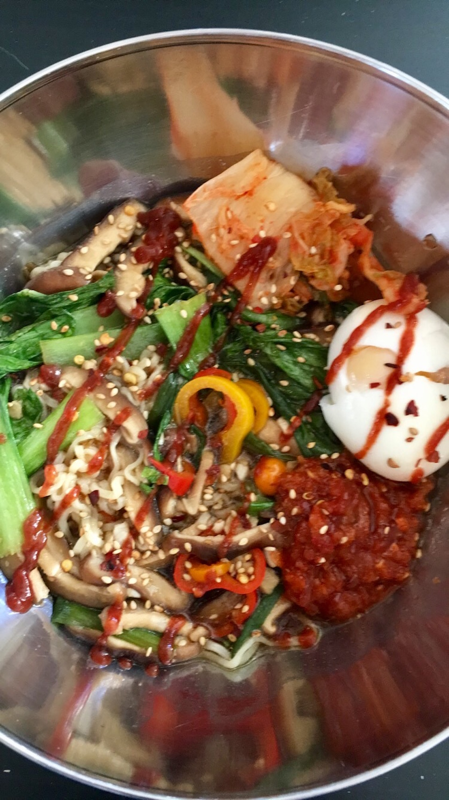

Vegetarian Ramen

Description
Quick and tasty!
Throw in whatever leftover veggie you have to fill the dish up
further.
Ingredients:
- 4 eggs
- 1 tablespoon sesame oil
- 1 tablespoon olive oil
- 4 cloves garlic, thinly sliced
- 2 tablespoons ginger paste
- 1 quart vegetable broth
- 3 tablespoons reduced-sodium soy sauce
- 1 tablespoon mirin
- 8 ounces shiitake mushrooms, sliced
- 5 red bell peppers, thinly sliced
- 4 cups bok choy, chopped
- 3 green onions, thinly sliced on the diagonal
- 16 ounces fresh ramen noodles
- 4 teaspoons chile-garlic sauce, or to taste
- ¼ cup kimchi, or to taste
- 4 radishes, thinly sliced
Steps
- Place eggs in a saucepan and cover with water. Bring to a boil, remove from heat, and let eggs stand in hot water for 2 minutes.
While eggs cook, prepare a bowl of ice water. When eggs are done cooking, transfer them from the saucepan to the ice bath, reserving
cooking water in the saucepan. Soak until completely cooled, about 15 minutes. Gently peel eggs and set aside.
- Heat sesame oil and olive oil together in a skillet over medium-high heat. Add garlic and ginger paste and saute 1 minute,
stirring constantly. Add broth and bring to a simmer. Add soy sauce and mirin.
- Add mushrooms to the simmering broth and cook 5 minutes. Add bell peppers, bok choy, and green onions and cook 1 minute more.
- While vegetables are cooking, reheat the water used for the eggs.
Add ramen to the boiling water and cook until just tender, 2 to 3 minutes. Drain.
- Place a portion of cooked noodles in a bowl and top with broth, vegetables, and 1 egg.
Garnish with kimchi, chile-garlic sauce, and radish. Repeat with remaining noodles, broth, vegetables, egg, and toppings.